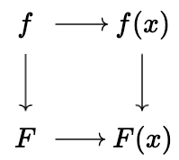
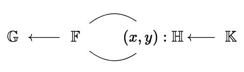

Your Golden Ticket to a Better DKG
We’ve completed an initial implementation of the Golden protocol, which lets you perform a DKG in just a single round. Going from two rounds to just one is a huge improvement in simplicity and performance. Even with our relatively unoptimized initial implementation, a dealer with n = 8 players finishes its contribution in about 35 seconds, players verify it in 1.8 seconds, and the entire dealing fits in just 5 KB (see the Performance section for more numbers and projections out to n = 64). In this post, we’ll go into how this protocol works, at a high level.
What a DKG needs to do
A threshold secret sharing scheme distributes a secret key among n players, such that any t of them can reconstruct the key. Shamir’s secret sharing uses polynomials to accomplish this. Our secret s : \mathbb{F} is shared using a polynomial f of degree t - 1, by setting f(0) = s, and setting each player’s share to s_i := f(x_i). One choice of the x_i evaluation points would be 1, 2, \ldots, but any distinct non-zero points work.
For reconstruction, we rely on the property that given any t points p_i, the values f(p_i) determine f completely. In fact, given any large enough subset of the n players, each player can locally convert their share s_i into a share s'_i, such that:
\sum_{i \in P} s'_i = s
How exactly this reconstruction works isn’t essential for this post; we just care about what the sharing looks like.
Distributing the Key Generation
To get these shares, we could simply have a dealer generate f, calculate f(x_i), and then send those shares to each player. The fundamental problem here is that we need to trust this dealer completely: they know the secret key, and we need to trust them to not use it.
A better approach is to require contributions from several dealers, that way we only need to trust one of them. Each dealer generates their own f_j, s_{ij} := f_j(x_i), and then each player’s share is:
s_i := \sum_j s_{ij} = \sum_j f_j(x_i)
One neat fact about polynomial evaluation is that (f + g)(x) = f(x) + g(x), so each player’s share is in fact:
s_i := \left(\sum_j f_j\right)(x_i)
so, we still have the nice property that there’s a shared polynomial, as if a single dealer had generated the polynomial.
There are some other details that aren’t too important to us, like how you don’t need to include every dealer, depending on your trust assumptions, and how you can preserve the value of f(0) across multiple rounds, so that the secret stays static.
One important detail we are failing to consider is what malicious dealers can do. What happens if a dealer sends s_{ij} values which don’t come from evaluating a single polynomial, or from using the wrong evaluation points? Then, our shared secret would not have the right structure, and we would not be able to use it in the way we expect.
Let’s look at how to address this.
The Two Round Approach
The “standard” approach, which we use today (see Pedersen and Gennaro, Jarecki, Krawczyk, Rabin), involves adding an additional round to the DKG, in order to let players “complain” about the shares they’ve received.
From here on out, we assume that \mathbb{F} is the scalar field of some cryptographic group \mathbb{G} of prime order, generated by G.
This lets a dealer send F_j := f_j \cdot G publicly (we define F_j to be a polynomial with coefficients in \mathbb{G}, produced by acting on G with each coefficient), as in Feldman’s verifiable secret sharing. This enables every player to check their own share, via:
f_j(x_i) \cdot G \overset{?}{=} F_j(x_i)
This works because multiplying by G commutes with evaluating the polynomial:

Players can thus send acks only for dealers whose shares they’ve checked. Dealers can collect these signed acks, and use them as social proof that their shares were generated correctly. This allows players to include only those dealers that have been acked by the other players.
But, what if the players are malicious? What if a player has a perfectly good share, but refuses to ack? In that case, the dealer needs a way to defend themselves. They can do this by revealing f_j(x_i) for the i-th player refusing to ack. The other players will then be able to check that f_j(x_i) \cdot G \overset{?}{=} F_j(x_i) themselves. This weeds out bad dealers, who will not get enough acks, but also prevents malicious players from falsely accusing a dealer.
There are a few annoyances with this approach though.
The security of the protocol relies on assumptions about the number of corruptions. Malicious players can lie and refuse to ack perfectly valid shares, forcing us to reveal them. We need to make assumptions about how many players might lie, in order to try and reject dealers with too many revealed shares. We also need to make assumptions about how many players are honest to define what a sufficient number of acks are.
The biggest annoyance however comes with the timing assumptions inherent here. Even after we see the contribution of a dealer, we need to wait long enough to allow players to submit their acks. Malicious players can be disruptive by not submitting anything here, so we need some kind of cutoff point in order to choose to reveal their share, but we don’t want to set it so tightly that honest players don’t have enough time to ack. Naively, this kind of clocked protocol forces us into a synchronous model of execution, which we usually try to avoid, because assuming realtime execution is quite unrealistic.
In practice, you can improve the situation by tying the clock to a consensus protocol, e.g. waiting a certain number of blocks rather than a certain amount of time. It’s possible that this is correct in the partial synchrony model as well.
Multiple rounds are also operationally complicated. The protocol is stateful between the rounds. Players need to remember what shares they received, and what they did or didn’t ack. We rely on private out-of-band communication for those shares, rather than a public log of messages. This makes recovering from failure during the protocol a lot harder, which just increases the operational complexity of the whole system. The uncertainty about time also makes it hard to run the protocol very fast. Even if there’s not much computation, you need to add in large time buffers for safety, and these buffers are just idle time.
The One Round Approach
Imagine that instead of requiring private communication, multiple rounds, and assumptions about malicious thresholds, we could instead have a simple protocol, where each dealer posts a public message, which:
- allows the intended recipient to obtain their share,
- hides this share from anyone else,
- convinces everybody that all these shares are correct.
This would address the issues we had with the two round approach. We wouldn’t need any state at all: if we lost our memory completely, we would be able to retrieve our share and any public results just by looking at the log, which contains what each dealer posted.
The protocol can proceed immediately after the dealers have posted their logs, without needing to wait for acknowledgments from the players. This lets us avoid any kind of synchrony assumption. In practice you would want to set a cutoff time (in terms of blocks, ideally), and would need to make sure that you had a supermajority of valid contributions, in order to prevent stalling by having malicious dealers withhold their contribution.
There’s also no need to reason about malicious players in this scheme: because dealer contributions are publicly verifiable, anyone can check that each dealer did the right thing, and you just need t valid contributions, to ensure that you can’t create signatures with too few signers.
Another advantage is that with one round, it would be easy to pro-actively refresh shares. It would be easy for a dealer to include shares, from a polynomial where f(0) = 0, and these could be added to the shares people have currently. Since anyone could verify that the shares were computed correctly after the dealer posts their message, the refresh could be tightly integrated with the consensus protocol.
How do we achieve this though? Naively, we could use a public key encryption scheme, include a ciphertext containing each participant’s share, and then use a Zero-Knowledge (ZK) proof to show that each share is an encryption of f_j(x_i), and f_j corresponds to the public polynomial F_j we’re including in our contribution. This is essentially the approach taken by prior non-interactive constructions such as Groth’s DKG, which uses ElGamal encryption together with a NIZK of correct encryption. That achieves the properties we want, but would involve a ZK proof over an excessively large statement. This naive approach would be impractical for hundreds of validators, so we need to dig a bit deeper.
Making this more efficient
Treating encryption as a black box and doing a full ZK proof is always going to result in an inefficient system. To improve on this, we can figure out exactly what our encryption needs to do, and prove as little as necessary about it.
It turns out that we don’t need a full encryption scheme. Imagine if the dealer j and the player i had a shared mask m_{ij}. Then, the dealer could include c_{ji} := s_{ji} + m_{ij}. If other participants don’t know this mask, and it’s only used once, then we can safely include c_{ji} as the ciphertext.
How do we establish a shared mask between a dealer and a player though? A natural primitive here is a key exchange. We have a function \text{ke}, taking in one secret key, one public key, and a message, such that:
\text{ke}(\text{sk}_i, \text{Pk}_j, \text{msg}) = \text{ke}(\text{Pk}_i, \text{sk}_j, \text{msg})
In other words, given one of the secret keys, you can compute the key exchange value, getting the same random mask as your counterparty. Without either secret key, this value looks completely random, and we can even include a message which should also affect the output. By choosing a random message for each new DKG, we can make each output fresh.
This scheme also suggests a natural way of checking the correctness of c_{ji}:
c_{ji} \cdot G = s_{ji} \cdot G + m_{ij} \cdot G = f_j(x_i) \cdot G + m_{ij} \cdot G \overset{?}{=} F_j(x_i) + m_{ij} \cdot G
If we had access to M_{ij} := m_{ij} \cdot G, then we could perform this check, allowing us to make sure that each share is masked correctly. Instead of doing a ZK proof for a full encryption, we could just do a proof for the relation:
\left\{ (M_{ij}, \text{Pk}_i, \text{Pk}_j) ; (\text{sk}_j, m_{ij}) \mid M_{ij} = m_{ij} \cdot G \land m_{ij} = \text{ke}(\text{Pk}_i, \text{sk}_j) \land \text{Pk}_j = \text{sk}_j \cdot G \right\}
i.e. that M_{ij} commits to the “correct” mask derived from the dealer’s secret key and the player’s public key.
So, what we need is a random function that either the dealer or the player can compute, which can also be publicly verified. The jargon here is a “verifiable random function” (VRF). One way to construct one of these is using a Diffie-Hellman exchange:
H(\text{sk}_i \cdot \text{Pk}_j, \text{msg}) = H(\text{sk}_j \cdot \text{Pk}_i, \text{msg})
We can hash the result of a DH exchange, along with the message, and get a random output, that either the dealer or player can compute. We can then do a generic ZK proof to show that:
M_{ij} = H(\text{sk}_j \cdot \text{Pk}_i, \text{msg}) \land \text{sk}_j \cdot G = \text{Pk}_j
In other words, this specific dealer correctly computed the mask, which M_{ij} commits to. From there, we can check the share without needing any further proofs.
Naturally, doing this generically would be too expensive, so we need to be a bit clever.
ZK proofs are usually based on an arithmetic circuit. The proof system has a typical field it works over, with addition and multiplication in this field forming the basic operations you need to define your computation with. In our case, since H outputs a mask in \mathbb{F}, it’s natural for \mathbb{F} to be the field we use for our computation. This means that H needs to be defined in this field, and that the group we use for the DH exchange needs to be easily computable in this field. To do that, it’s natural to pick an elliptic curve whose coordinates are elements of \mathbb{F}. Let’s call this \mathbb{H}. The situation is that we have:
- DKG group \mathbb{G}, scalar field \mathbb{F},
- DH curve \mathbb{H} with coordinates in \mathbb{F}, and scalar field \mathbb{K}.
Or, in a diagram:

In other words, \mathbb{H} is a curve “over” the group \mathbb{G}. Concretely, for the case of BLS12-381, there’s a curve called “Bandersnatch” defined over its scalar field, that we can use.
Because the curve is naturally defined over the native field of our circuit, doing curve operations is relatively easy. Because of this, we want to also use the curve for doing the hash function. We can define:
H(P, \text{msg}) := x(x(P) \cdot H_1(\text{msg})) + \beta x(x(P) \cdot H_2(\text{msg}))
where x is the function getting the x coordinate of an elliptic curve point. Because this curve is defined over \mathbb{F}, this is simply an \mathbb{F} element. We also abuse notation a bit, and do x(P) \cdot Y, to mean decomposing x(P) into bits, and doing a scalar multiplication. We also need H_1, H_2 : \text{msg} \to \mathbb{H}, two different hash-to-curve functions. These should produce a random element on the curve, without us learning its discrete logarithm. Because these functions are run on the public value \text{msg}, we don’t actually need to compute them in circuit. We can instead compute them ourselves, and supply them as input to the circuit. This trick lets us defer the hard work of hashing the message outside of the proof.
Putting everything we need to prove together, we get:
\text{sk}_j \cdot G = \text{Pk}_j \land P = \text{sk}_j \cdot \text{Pk}_i \land m_{ij} = H(P, \text{msg}) \land M_{ij} = m_{ij} \cdot G
Where \text{Pk}_i, \text{Pk}_j, M_{ij}, H_1(\text{msg}), H_2(\text{msg}) are all public inputs to the proof. All of these operations are nice and native, except for that last one, the m_{ij} \cdot G. While m_{ij} is our native field element \mathbb{F}, G is in \mathbb{G}, and not \mathbb{H}! Because of this, we can’t natively prove that this multiplication is correct as easily.
While it would be possible to emulate this, at a cost, we can actually get around this requirement entirely by using a specific proof system. If we use Bulletproofs, we actually get the nice property, for free, that if you want to prove:
f(a_0, \ldots) \land \forall i, a_i \cdot G = A_i
then you don’t actually need to prove anything about the a_i \cdot G part, only the relation f. Intuitively, this works because Bulletproofs is natively about proving that something holds for the values that the A_i commit to, so we get the fact that A_i = a_i \cdot G for free, and we just need to pay for whatever we want to prove about a_i. In our case, we want to prove that the mask was computed by doing the VRF.
A small ZK stack
So, to implement all of this, we needed to:
- implement the Bandersnatch curve over BLS12-381,
- implement Bulletproofs,
- implement the specific circuit we need for Golden.
For the first and third item, we leaned on the arkworks ecosystem, for quick prototyping. There was an existing Bandersnatch implementation that we were able to use.
Unfortunately, there wasn’t an existing Bulletproofs implementation that would work in our case, so we ended up doing that ourselves. The crux of this proof system is that you have:
P = \langle a_i, G_i \rangle + \langle b_i, H_i \rangle
and you want to prove that:
\langle a_i, b_i \rangle = c
This kind of proof is called an “inner product argument”. Bulletproofs also reduces an arithmetic circuit, in the form of R1CS, into this argument, through some interaction between the prover and verifier, which we can make non-interactive, replacing the verifier’s challenges with a hash function.
The important thing to note, however, is that this core inner product argument is what determines the cost of the verification. We get O(\text{lg} n) proof sizes (n being the number of multiplications in our circuit), and O(n) verifier time, which consists of a Multi-Scalar Multiplication (MSM) of size O(n). What’s neat about this system is that it’s very amenable to batch verification. We can verify many proofs with a single MSM of size O(n), which in practice makes it so that each additional proof is no less expensive.
We also use batching in the prover, but to less effect. By having the prover show that all of the masks they produced are correct, we get O(\text{lg}(m n)) proof sizes instead of O(m \cdot \text{lg} n), which we would have if we did one proof per mask. This does come at the cost of having O(m n) verification time though. Thankfully, because of batching, we only pay the cost of verifying the proof of a single dealer, which is quite nice.
Performance
Here are the current performance numbers we have from our
initial implementation. Measured values are taken from
bls12381::golden_dkg::{deal, verify, dealing_size}
for n \in \{2, 4, 8\}; values
for n \in \{16, 32, 64\} are
projected linearly (shown in gray) since the underlying cost is
dominated by O(n) work.
| n | Deal time | Verify time | Dealing size |
|---|---|---|---|
| 2 | 8.86 s | 534 ms | 2,903 B |
| 4 | 17.56 s | 956 ms | 3,655 B |
| 8 | 34.78 s | 1.76 s | 5,111 B |
| 16 | ~69.7 s | ~3.40 s | ~8,055 B |
| 32 | ~139 s | ~6.67 s | ~13,943 B |
| 64 | ~278 s | ~13.2 s | ~25,719 B |
There’s still some room for improvement, e.g. by using a more efficient circuit, and avoiding the overhead from converting between Arkworks’s R1CS representation and what Bulletproofs needs. Even with the current numbers, this would still be an attractive protocol. Even though the dealer takes a lot of time, because you don’t need to wait for acks, in practice this would be a lot faster.
Conclusion
We’ll continue grinding on the performance, as well as testing and verifying the security of our implementation, in order to make this protocol a trustworthy alternative to our current DKG. We expect that the one round protocol will be a lot simpler to use, and are excited for what applications people will cook up with it! Stay tuned for more blog posts as we dig into optimizations!